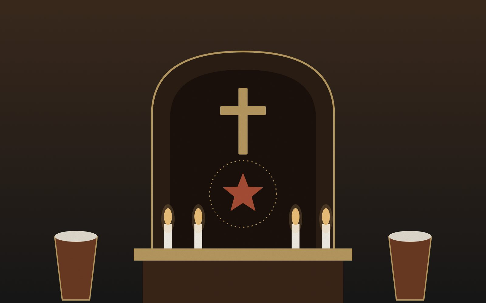
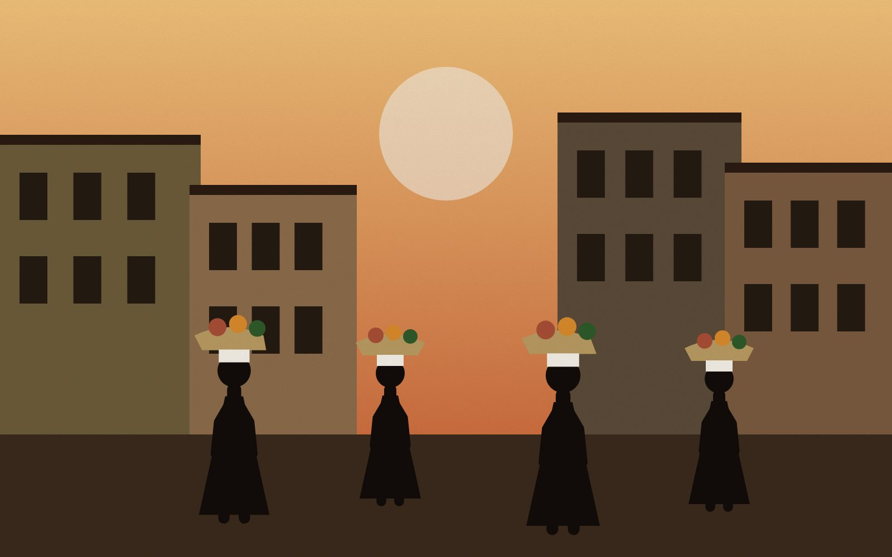
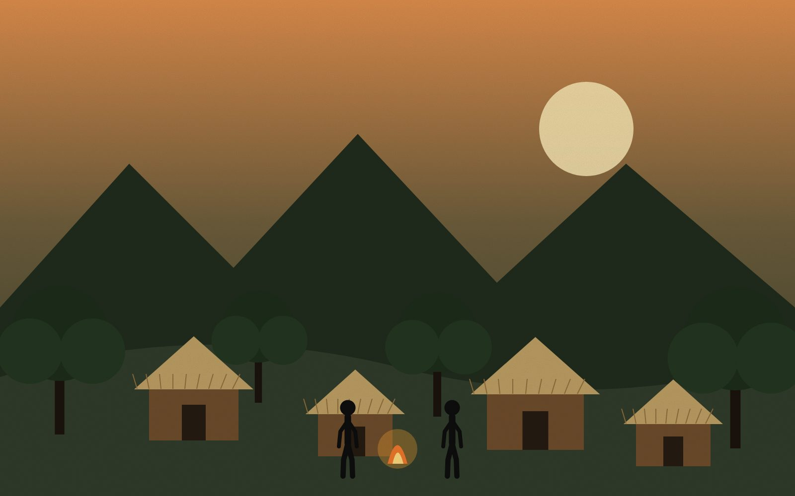

Acarajé e a Ancestralidade
Alimento sagrado nos terreiros (oferenda a Iansã), o acarajé tornou-se símbolo da cultura baiana. Seu preparo guarda segredos transmitidos por gerações de mulheres negras.
Durante a escravidão, a população negra desenvolveu diferentes formas de resistência, preservou tradições e construiu caminhos de luta por liberdade. Conhecer essas histórias é compreender uma parte fundamental da formação do Brasil.
A Independência do Brasil, declarada em 1822, trouxe autonomia política em relação a Portugal, mas manteve intacta a estrutura mais cruel do país: a escravidão. O Império foi erguido e sustentado pelo trabalho de pessoas africanas e afro-brasileiras.
No entanto, a história desse período não é apenas uma narrativa de opressão. A população negra assumiu um protagonismo histórico inegável. A resistência não se limitou apenas aos confrontos diretos ou revoltas armadas; ela se manifestou profundamente na preservação da cultura, na manutenção de vínculos religiosos, na criação de redes comunitárias de apoio, na busca incessante por autonomia e na produção intelectual.
O Brasil rompe politicamente com Portugal, consolidando-se como um Império. Contudo, as elites agrárias garantem a manutenção da escravidão como base da economia nacional.
Lei que declarava livres os africanos desembarcados no Brasil. Foi amplamente ignorada pelas autoridades e proprietários de terras, gerando a expressão "lei para inglês ver".
Proibição definitiva e repressão efetiva ao tráfico negreiro transatlântico. Isso impulsionou o tráfico interno, transferindo escravizados do Nordeste para as fazendas de café do Sudeste.
Declarava livres os filhos de mulheres escravizadas nascidos a partir daquela data, embora as crianças ficassem sob a tutela dos senhores até os 8 ou 21 anos.
Libertava escravizados com mais de 60 anos (idade que poucos alcançavam devido às condições extremas). Na prática, desobrigava os senhores de sustentar idosos.
Abolição formal e legal da escravidão no Brasil, resultado de intensa pressão de movimentos abolicionistas, fugas em massa e revoltas da própria população negra.

Fim do Império. O novo regime, no entanto, não implementou políticas de inclusão, educação ou distribuição de terras para a população negra recém-liberta.
Originada a partir de tradições e rituais trazidos da África (especialmente de matriz banto), a capoeira desenvolveu-se no Brasil como uma complexa mistura de luta, dança, música e sociabilidade.
Para a população negra — escravizada, liberta ou livre —, a prática corporal era um treinamento de autodefesa, uma forma de proteção mútua nas ruas das cidades imperiais e um espaço vital de afirmação cultural.
No Brasil Império, as "maltas" de capoeiristas dominavam espaços urbanos. As autoridades policiais reprimiam duramente a prática, associando-a à desordem.
É importante ressaltar que a capoeira foi violentamente perseguida durante o Império, mas sua criminalização oficial ocorreu apenas na República, com o Código Penal de 1890.

Em uma sociedade onde o catolicismo era a religião oficial do Estado (Constituição de 1824) e outras práticas eram reprimidas, a manutenção da fé africana exigiu inteligência e resiliência.
O sincretismo religioso — a associação de Orixás, Voduns e Inquices a santos católicos — não foi uma simples "mistura", mas uma sofisticada estratégia de sobrevivência. Por trás dos altares católicos, cultuava-se a ancestralidade africana.
As religiões afro-brasileiras formaram comunidades de acolhimento (terreiros, irmandades católicas negras), onde a língua sagrada, a hierarquia, a música e o sentido de pertencimento garantiram que a identidade de diversos povos não fosse apagada.
Ingredientes como o dendê, o quiabo e o feijão-fradinho, somados a saberes milenares, moldaram a identidade alimentar do Brasil.
Alimento sagrado nos terreiros (oferenda a Iansã), o acarajé tornou-se símbolo da cultura baiana. Seu preparo guarda segredos transmitidos por gerações de mulheres negras.

Nas cidades do Império, mulheres negras (escravizadas e libertas) dominavam o comércio de rua de alimentos. O dinheiro das vendas, muitas vezes, financiava a compra de alforrias e o sustento familiar.
Diferenciar as condições históricas é crucial: enquanto algumas trabalhavam sob ordens senhoriais ("escravas de ganho"), outras eram libertas lutando por autonomia econômica, fazendo da comida um vetor de liberdade.
Os quilombos representavam a ruptura física com o sistema escravista. Eram comunidades ocultas onde recriavam-se modos de vida livres. O Quilombo dos Palmares, liderado por Zumbi e Dandara, ocorreu no período colonial, mas sua memória inspirou a formação de inúmeros quilombos durante todo o Império, como o Quilombo do Jabaquara, em São Paulo, e o Quilombo de Vassouras, no Rio de Janeiro.
Contudo, a resistência também ocorria dentro das fazendas e das cidades. A resistência cotidiana envolvia quebrar ferramentas, trabalhar em ritmo mais lento, realizar abortos para poupar filhos da escravidão, formar laços de parentesco e economizar secretamente para negociar cartas de alforria. A população negra jamais aguardou passivamente a libertação.

No século XIX, a terceira geração do Romantismo brasileiro (Geração Condoreira) fez da literatura uma arma política. A poesia social denunciou as atrocidades do tráfico e a desumanização promovida pela escravidão.
Castro Alves (1847–1871), conhecido como o "Poeta dos Escravos", chocou a sociedade letrada com obras como O Navio Negreiro. Ele ajudou a moldar a opinião pública contra a escravidão, usando recursos literários para gerar empatia e indignação.
A literatura aliou-se ao ativismo de intelectuais negros como Luiz Gama e José do Patrocínio, mostrando que a resistência operava tanto nas matas (quilombos) quanto nas páginas dos jornais e nos tribunais.

"Senhor Deus dos desgraçados!— Castro Alves, O Navio Negreiro (1868)
Dizei-me vós, Senhor Deus!
Se é loucura... se é verdade
Tanto horror perante os céus?!"
A luta por liberdade no Brasil Império não teve apenas um formato. Ela foi um ecossistema de sobrevivência e afirmação.
Defesa do corpo e sociabilidade. Enfrentava o controle policial e afirmava o domínio dos espaços urbanos.
Defesa do espírito. Manteve laços comunitários e filosofias ancestrais vivas sob a imposição do catolicismo imperial.
Defesa da memória e subsistência. Gerou autonomia financeira para compra de alforrias e preservou rituais.
Ruptura territorial. Comunidades de autonomia política e produtiva que desestabilizavam a ordem escravocrata.
Resistência silenciosa. Sabotagens, negociações e redes de afeto dentro do coração do sistema produtivo.
Trincheira intelectual. Mobilização da opinião pública e denúncia estética que expôs as contradições do Império.
A Lei Áurea de 1888 encerrou a escravidão legalmente, mas a ausência de políticas de reparação perpetuou as desigualdades raciais e sociais na República. Conhecer as estratégias históricas de resistência é vital para combater o racismo estrutural que ainda reverbera no Brasil contemporâneo.